library(ggplot2)
library(readxl)
library(car)Loading required package: carData#library(GGally)When you click the Render button a document will be generated that includes both content and the output of embedded code. You can embed code like this:
library(ggplot2)
library(readxl)
library(car)Loading required package: carData#library(GGally)The echo: false option disables the printing of code (only output is displayed).
datasetBike <- read.csv('../data/day.csv')
head(datasetBike) instant dteday season yr mnth holiday weekday workingday weathersit
1 1 2011-01-01 1 0 1 0 6 0 2
2 2 2011-01-02 1 0 1 0 0 0 2
3 3 2011-01-03 1 0 1 0 1 1 1
4 4 2011-01-04 1 0 1 0 2 1 1
5 5 2011-01-05 1 0 1 0 3 1 1
6 6 2011-01-06 1 0 1 0 4 1 1
temp atemp hum windspeed casual registered cnt
1 0.344167 0.363625 0.805833 0.1604460 331 654 985
2 0.363478 0.353739 0.696087 0.2485390 131 670 801
3 0.196364 0.189405 0.437273 0.2483090 120 1229 1349
4 0.200000 0.212122 0.590435 0.1602960 108 1454 1562
5 0.226957 0.229270 0.436957 0.1869000 82 1518 1600
6 0.204348 0.233209 0.518261 0.0895652 88 1518 1606season = datasetBike$season #season: (1:winter, 2:spring, 3:summer, 4:fall)
yr = datasetBike$yr #year: year (0: 2011, 1:2012)
month = datasetBike$mnth #month ( 1 to 12)
holiday = datasetBike$holiday #weather day is holiday or not (extracted from http://dchr.dc.gov/page/holiday-schedule)
wkday= datasetBike$weekday #day of the week (0=Sunday, 1=Monday,..., 6=Saturday)
workingday = datasetBike$workingday #if day is neither weekend nor holiday is 1, otherwise is 0.
weather = datasetBike$weathersit
#1: Clear, Few clouds, Partly cloudy, Partly cloudy
#2: Mist + Cloudy, Mist + Broken clouds, Mist + Few clouds, Mist
#3: Light Snow, Light Rain + Thunderstorm + Scattered clouds, Light Rain + Scattered clouds
#4: Heavy Rain + Ice Pallets + Thunderstorm + Mist, Snow + Fog
temp = datasetBike$temp
#Normalized temperature in Celsius. The values are derived via (t-t_min)/(t_max-t_min),
#t_min=-8, t_max=+39 (only in hourly scale)
atemp = datasetBike$atemp
#Normalized feeling temperature in Celsius. The values are derived via (t-t_min)/(t_max-t_min),
#t_min=-16, t_max=+50 (only in hourly scale)
hum = datasetBike$hum #Normalized humidity. The values are divided to 100 (max)
wind = datasetBike$windspeed # Normalized wind speed. The values are divided to 67 (max)
casual = datasetBike$casual #count of casual users
registered = datasetBike$registered #count of registered users
cnt = datasetBike$cnt #the total rental bikes including both casual and registeredsummary(cnt) Min. 1st Qu. Median Mean 3rd Qu. Max.
22 3152 4548 4504 5956 8714 hist(cnt, main = "Histogram of Number of Bikes Rented per Day", xlab= "number of bikes")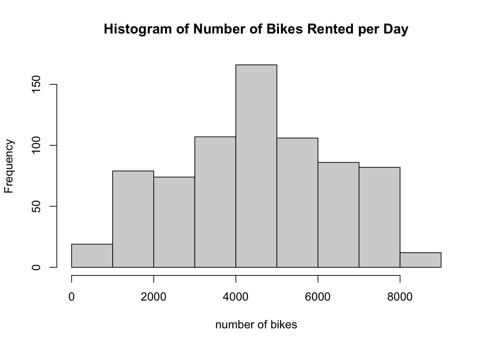
summary(holiday) Min. 1st Qu. Median Mean 3rd Qu. Max.
0.00000 0.00000 0.00000 0.02873 0.00000 1.00000 # Calculate the frequency of holidays
freq_table <- table(holiday)
num_zeros <- freq_table[["0"]]
num_ones <- freq_table[["1"]]
print(paste("Number of non-holidays:", num_zeros))[1] "Number of non-holidays: 710"print(paste("Number of holidays:", num_ones))[1] "Number of holidays: 21"#show proportion of holidays
holiday_proportion <- prop.table(table(holiday))
"The proportion of holidays"[1] "The proportion of holidays"print(holiday_proportion)holiday
0 1
0.97127223 0.02872777 #show histogram of holiday
hist(holiday)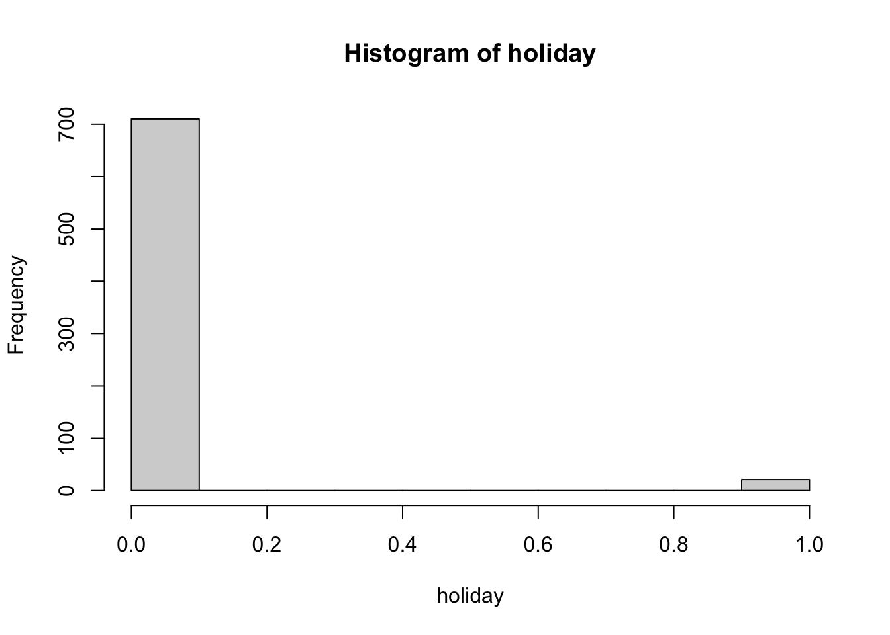
#Plot the number of bikes rented on holiday (which is either 0 or 1)
ggplot(datasetBike, aes(x = dteday, y = cnt, fill = factor(holiday))) +
geom_bar(stat = "identity") +
labs(x = "Date", y = "Number of Bikes Rented", title = "Number of Bikes Rented on Holidays") +
scale_fill_manual(values = c("0" = "yellow", "1" = "blue")) +
theme_minimal()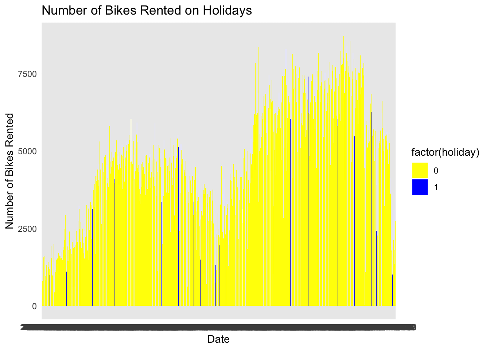
#box plot
# Filter the data for holidays
holiday_data <- subset(datasetBike, holiday == 1)
non_holiday_data <- subset(datasetBike, holiday == 0)
print("for holiday")[1] "for holiday"summary(holiday_data$cnt) Min. 1st Qu. Median Mean 3rd Qu. Max.
1000 1951 3351 3735 6034 7403 print("for non holiday")[1] "for non holiday"summary(non_holiday_data$cnt) Min. 1st Qu. Median Mean 3rd Qu. Max.
22 3214 4558 4527 5933 8714 ggplot() +
geom_boxplot(data = holiday_data, aes(x = "Holiday", y = cnt), fill = "skyblue") +
geom_boxplot(data = non_holiday_data, aes(x = "Non-Holiday", y = cnt), fill = "lightgreen") +
labs(x = "Holiday[1]", y = "Number of Bikes Rented", title = "Box Plot of Bikes Rented on Holidays vs Non-Holidays") +
theme_minimal() + facet_wrap(~holiday)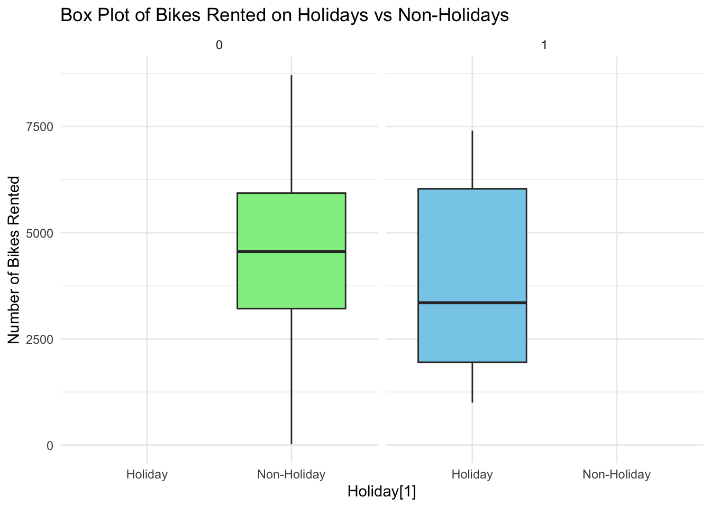
m.ols <- lm(cnt ~ holiday, data = datasetBike)
summary(m.ols)
Call:
lm(formula = cnt ~ holiday, data = datasetBike)
Residuals:
Min 1Q Median 3Q Max
-4505.1 -1328.1 21.9 1453.9 4186.9
Coefficients:
Estimate Std. Error t value Pr(>|t|)
(Intercept) 4527.10 72.58 62.37 <2e-16 ***
holiday -792.10 428.23 -1.85 0.0648 .
---
Signif. codes: 0 '***' 0.001 '**' 0.01 '*' 0.05 '.' 0.1 ' ' 1
Residual standard error: 1934 on 729 degrees of freedom
Multiple R-squared: 0.004671, Adjusted R-squared: 0.003306
F-statistic: 3.421 on 1 and 729 DF, p-value: 0.06476#descriptive stats for Weekday
summary(wkday) Min. 1st Qu. Median Mean 3rd Qu. Max.
0.000 1.000 3.000 2.997 5.000 6.000 hist(wkday)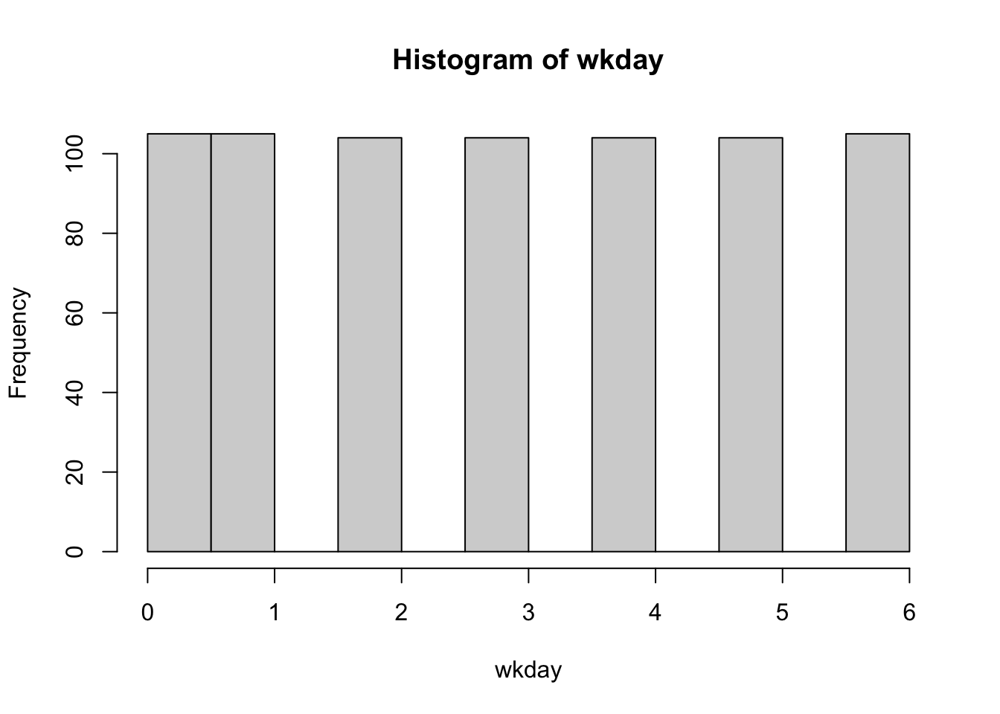
sunday <- sum(wkday==0) #105
sunday[1] 105monday <- sum(wkday==1) #105
monday[1] 105tues <- sum(wkday==2) #105
tues #104[1] 104weds <- sum(wkday==3)
weds #104[1] 104thurs <- sum(wkday==3)
thurs #104[1] 104fri <- sum(wkday==3)
fri #104[1] 104sat <- sum(wkday==3)
sat #104[1] 104#Descriptive Stats for Weather
#weather (categorical, 1-4 with a higher number indicating worse weather)
hist(weather)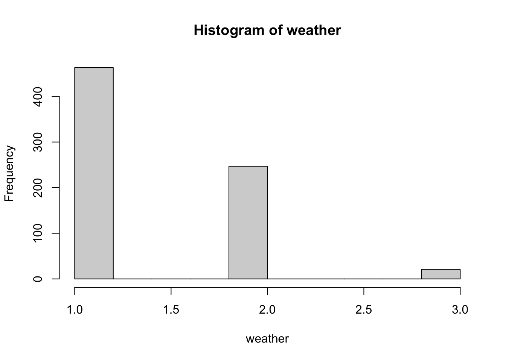
one <- sum(weather==1)
one #463[1] 463two <- sum(weather==2)
two #247[1] 247three <- sum(weather==3)
three #21[1] 21#Descriptive Stats for wind
#windspeed (continuous)
hist(wind)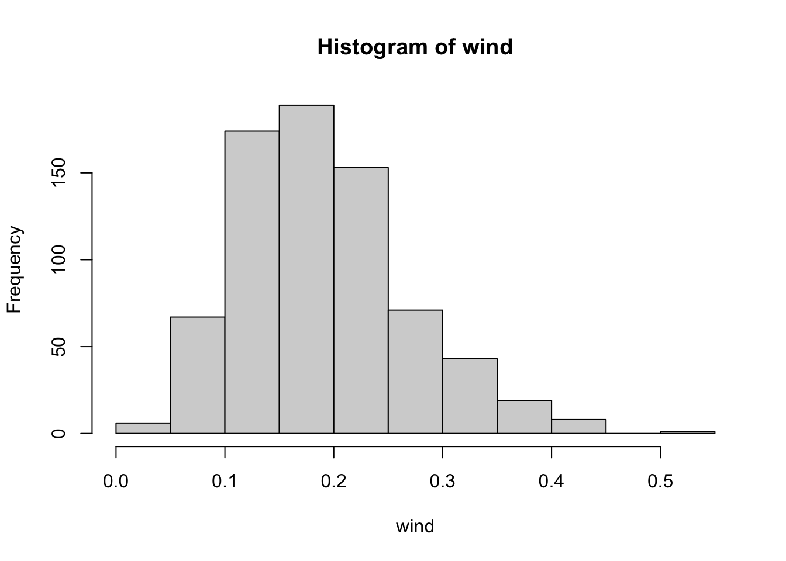
summary(wind) Min. 1st Qu. Median Mean 3rd Qu. Max.
0.02239 0.13495 0.18097 0.19049 0.23321 0.50746 #Descriptive Stats for Tempertature
#temperature (Celsius, continuous)
hist(temp)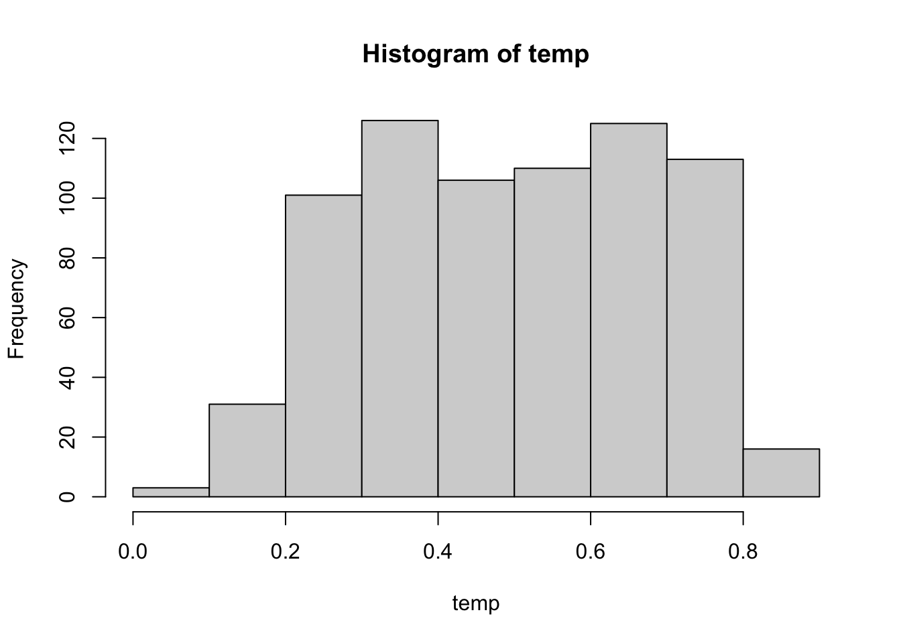
summary(temp) Min. 1st Qu. Median Mean 3rd Qu. Max.
0.05913 0.33708 0.49833 0.49538 0.65542 0.86167 #Descriptive Stats for Feelig Temperature
#feeling temperature (Celsius, continuous)
hist(atemp)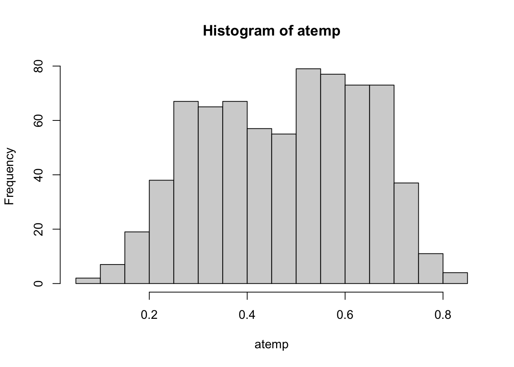
summary(atemp) Min. 1st Qu. Median Mean 3rd Qu. Max.
0.07907 0.33784 0.48673 0.47435 0.60860 0.84090 ##Descriptive Stats for Humidity
#humidity (continuous)
hist(hum)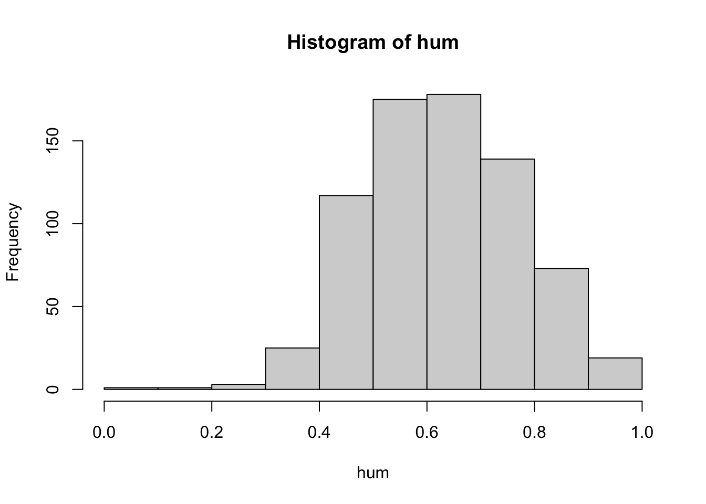
summary(hum) Min. 1st Qu. Median Mean 3rd Qu. Max.
0.0000 0.5200 0.6267 0.6279 0.7302 0.9725 library(readxl)
library(car)
library (ggplot2)
model1 <- lm(cnt~holiday)
summary(model1)
Call:
lm(formula = cnt ~ holiday)
Residuals:
Min 1Q Median 3Q Max
-4505.1 -1328.1 21.9 1453.9 4186.9
Coefficients:
Estimate Std. Error t value Pr(>|t|)
(Intercept) 4527.10 72.58 62.37 <2e-16 ***
holiday -792.10 428.23 -1.85 0.0648 .
---
Signif. codes: 0 '***' 0.001 '**' 0.01 '*' 0.05 '.' 0.1 ' ' 1
Residual standard error: 1934 on 729 degrees of freedom
Multiple R-squared: 0.004671, Adjusted R-squared: 0.003306
F-statistic: 3.421 on 1 and 729 DF, p-value: 0.06476scatterplot(wkday,cnt,xlab="Day of the Week",ylab="Cnt")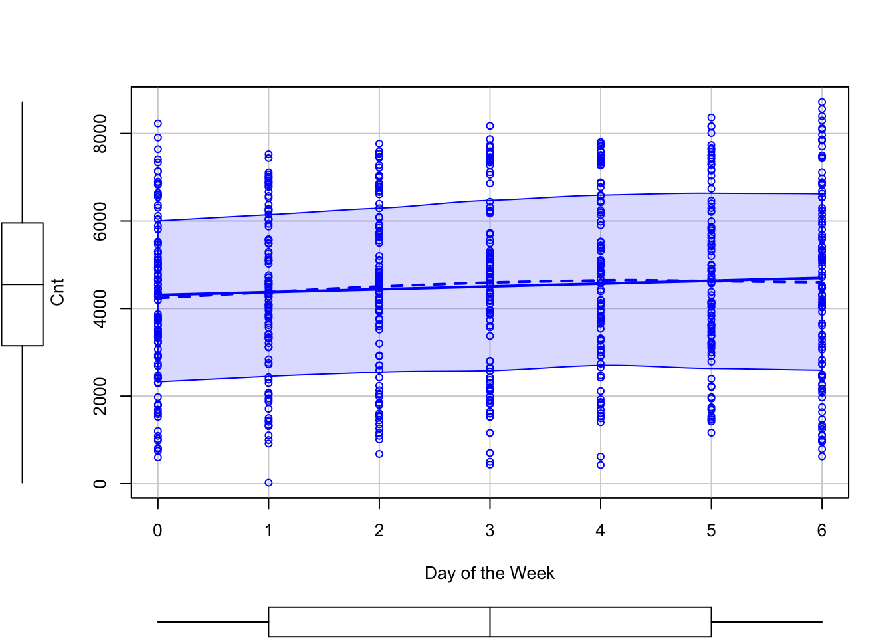
model2 <- lm(cnt~wkday)
summary(model2)
Call:
lm(formula = cnt ~ wkday)
Residuals:
Min 1Q Median 3Q Max
-4352.2 -1404.9 44.1 1467.1 4014.0
Coefficients:
Estimate Std. Error t value Pr(>|t|)
(Intercept) 4309.02 128.73 33.473 <2e-16 ***
wkday 65.17 35.71 1.825 0.0684 .
---
Signif. codes: 0 '***' 0.001 '**' 0.01 '*' 0.05 '.' 0.1 ' ' 1
Residual standard error: 1934 on 729 degrees of freedom
Multiple R-squared: 0.004549, Adjusted R-squared: 0.003183
F-statistic: 3.331 on 1 and 729 DF, p-value: 0.06839scatterplot(weather,cnt,xlab="Weather",ylab="Cnt")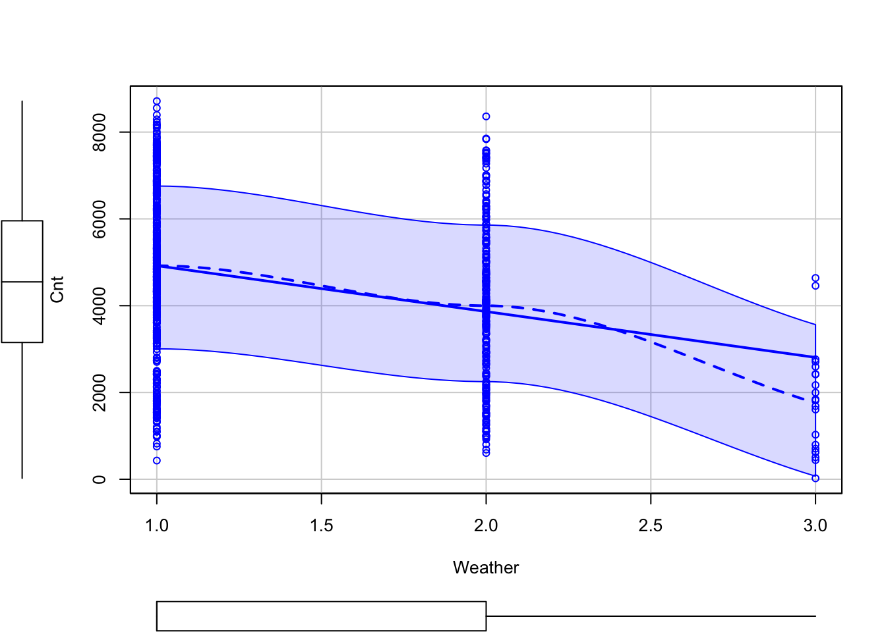
model3 <- lm(cnt~weather)
summary(model3)
Call:
lm(formula = cnt ~ weather)
Residuals:
Min 1Q Median 3Q Max
-4491.3 -1285.8 -45.1 1421.3 4496.9
Coefficients:
Estimate Std. Error t value Pr(>|t|)
(Intercept) 5979.6 188.3 31.75 <2e-16 ***
weather -1057.3 125.7 -8.41 <2e-16 ***
---
Signif. codes: 0 '***' 0.001 '**' 0.01 '*' 0.05 '.' 0.1 ' ' 1
Residual standard error: 1851 on 729 degrees of freedom
Multiple R-squared: 0.08844, Adjusted R-squared: 0.08719
F-statistic: 70.73 on 1 and 729 DF, p-value: < 2.2e-16library(ggplot2)
ggplot(datasetBike, aes(x = temp, y = cnt)) +
geom_point() +
labs(title = "Scatterplot of Number of Bikes Rented over Temperature",
x = "Temperature",
y = "Number of Bikes Rented") +
theme_minimal()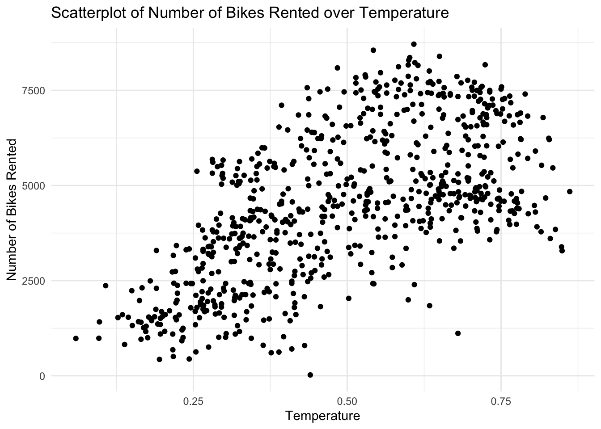
##Box Plots
boxplot(temp, main="Boxplot of Temperature", xlab="Temperature", horizontal = TRUE)
# Get the summary of the temperature
temp_summary <- summary(temp)
# Construct the summary text
summary_text <- paste("Min:", temp_summary["Min."],
"1st Qu.:", temp_summary["1st Qu."],
"Median:", temp_summary["Median"],
"Mean:", temp_summary["Mean"],
"3rd Qu.:", temp_summary["3rd Qu."],
"Max:", temp_summary["Max."])
# Place the summary text below the boxplot
mtext(summary_text, side = 1, line = 4, cex = 0.7)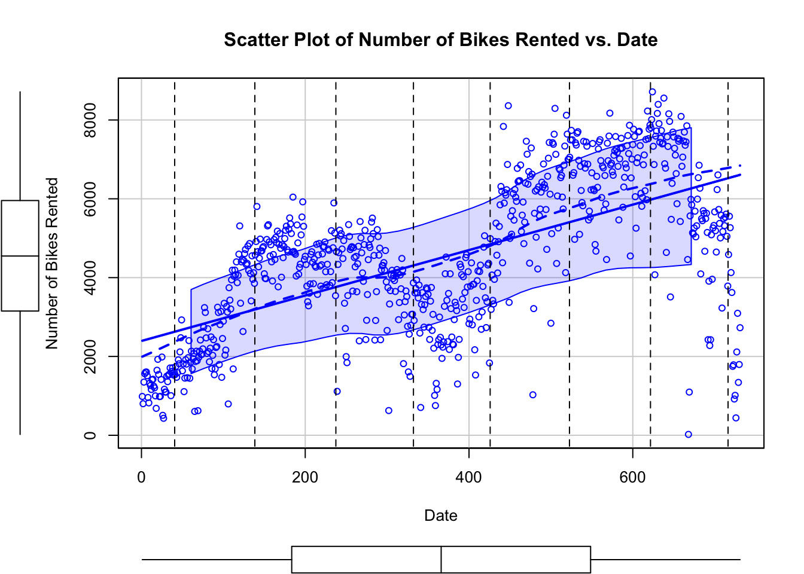
boxplot(atemp, main="Boxplot of Feeling Temperature", xlab="Feeling Temperature", horizontal = TRUE)
atemp_summary <-summary(atemp)
summary_text2 <- paste("Min:", atemp_summary["Min."],
"1st Qu.:", atemp_summary["1st Qu."],
"Median:", atemp_summary["Median"],
"Mean:", atemp_summary["Mean"],
"3rd Qu.:", atemp_summary["3rd Qu."],
"Max:", atemp_summary["Max."])
# Place the summary text below the boxplot
mtext(summary_text2, side = 1, line = 4, cex = 0.7)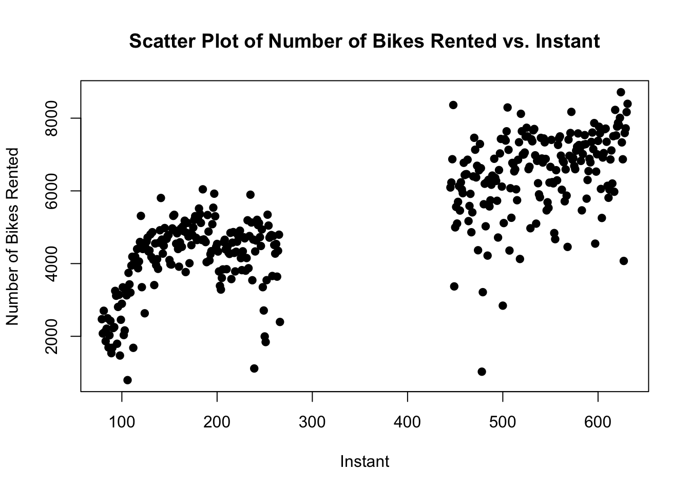
boxplot(wind, main="Boxplot of Wind Speed", xlab="Wind Speed", horizontal = TRUE)
wind_summary <-summary(wind)
summary_text3 <- paste("Min:", wind_summary["Min."],
"1st Qu.:", wind_summary["1st Qu."],
"Median:", wind_summary["Median"],
"Mean:", wind_summary["Mean"],
"3rd Qu.:", wind_summary["3rd Qu."],
"Max:", wind_summary["Max."])
# Place the summary text below the boxplot
mtext(summary_text3, side = 1, line = 4, cex = 0.7)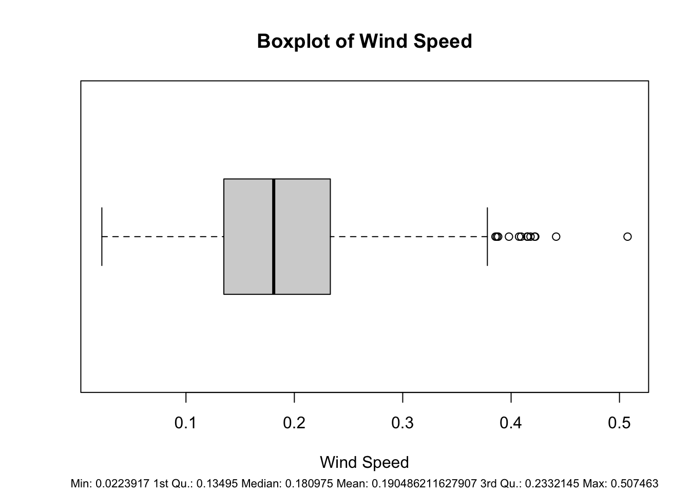
boxplot(hum, main="Boxplot of Humidity", xlab="Humidity", horizontal = TRUE)
hum_summary <-summary(hum)
summary_text4 <- paste("Min:", hum_summary["Min."],
"1st Qu.:", hum_summary["1st Qu."],
"Median:", hum_summary["Median"],
"Mean:", hum_summary["Mean"],
"3rd Qu.:", hum_summary["3rd Qu."],
"Max:", hum_summary["Max."])
# Place the summary text below the boxplot
mtext(summary_text4, side = 1, line = 4, cex = 0.7)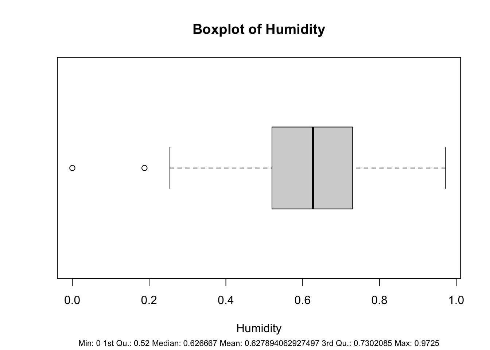
##Scatter Plots
scatterplot(temp, cnt,
xlab = "Temperature",
ylab = "Number of Bikes Rented",
main = "Scatter Plot of Number of Bikes Rented vs. Temperature")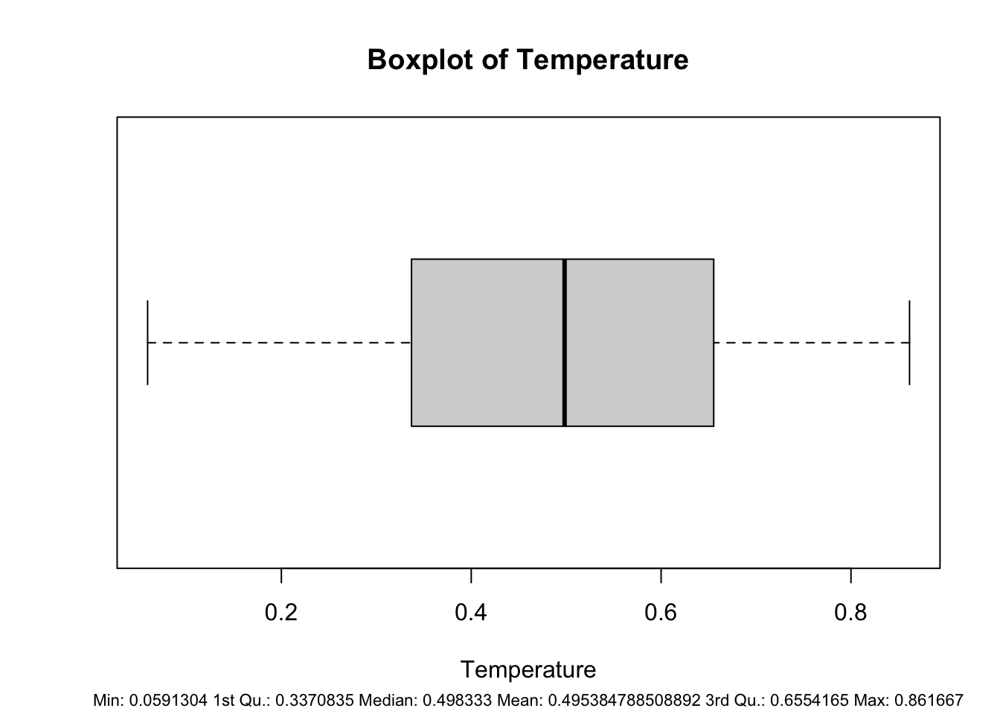
scatterplot(atemp, cnt,
xlab = "Feeling Temperature",
ylab = "Number of Bikes Rented",
main = "Scatter Plot of Number of Bikes Rented vs. Feeling Temperature")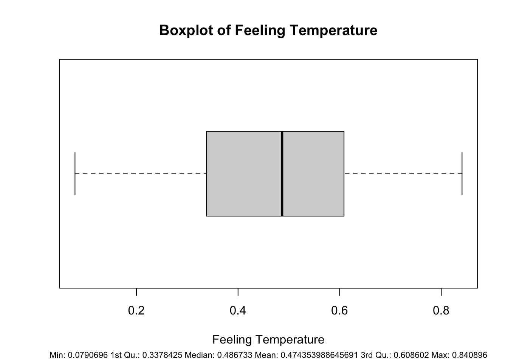
scatterplot(hum, cnt,
xlab = "Humidity",
ylab = "Number of Bikes Rented",
main = "Scatter Plot of Number of Bikes Rented vs. Humidity")scatterplot(wind, cnt,
xlab = "Wind Speed",
ylab = "Number of Bikes Rented",
main = "Scatter Plot of Number of Bikes Rented vs. Wind Speed")##Residual Plots
#draw the residual plot for each x covariate(tempeartue, feeling temprature, windspeed, humidity) vs y=cnt
model1 <- lm(cnt~temp, data=datasetBike)
res <- resid(model1)
plot(fitted(model1), res,
xlab = "Temperature",
ylab = "Number of Bikes Rented",
main = "Residuals vs. Fitted Values Plot for Linear Regression of Bike Count on Temperature")
abline(0,0)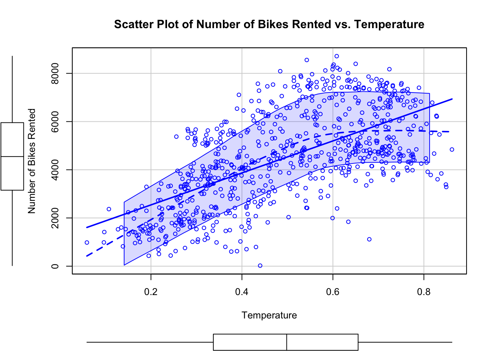
model2 <- lm(cnt~atemp, data=datasetBike)
res2 <- resid(model2)
plot(fitted(model2), res2,
xlab = "Feeling Temperature",
ylab = "Number of Bikes Rented",
main = "Residuals vs. Fitted Values Plot for Linear Regression of Bike Count on Feeling Temperature")
abline(0,0)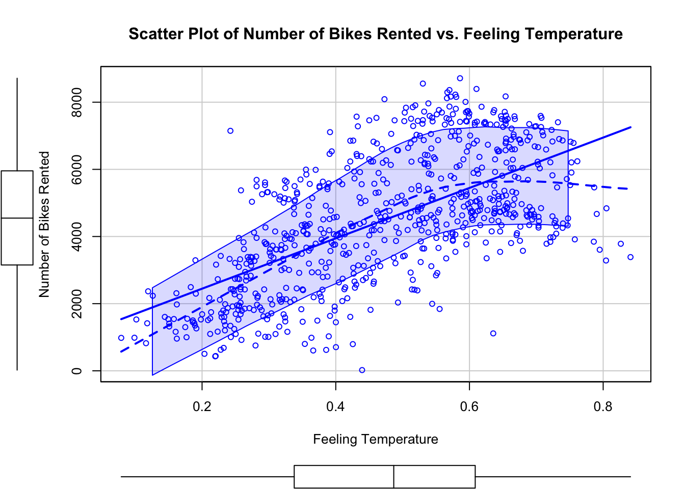
model3 <- lm(cnt~wind, data=datasetBike)
res3 <- resid(model3)
plot(fitted(model3), res3,
xlab = "Wind Speed",
ylab = "Number of Bikes Rented",
main = "Residuals vs. Fitted Values Plot for Linear Regression of Bike Count on Wind Speed")
abline(0,0)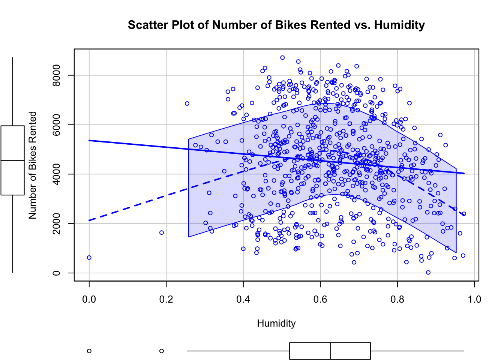
model4 <- lm(cnt~hum, data=datasetBike)
res4 <- resid(model4)
plot(fitted(model4), res4,
xlab = "Humidity",
ylab = "Number of Bikes Rented",
main = "Residuals vs. Fitted Values Plot for Linear Regression of Bike Count on Humidity")
abline(0,0)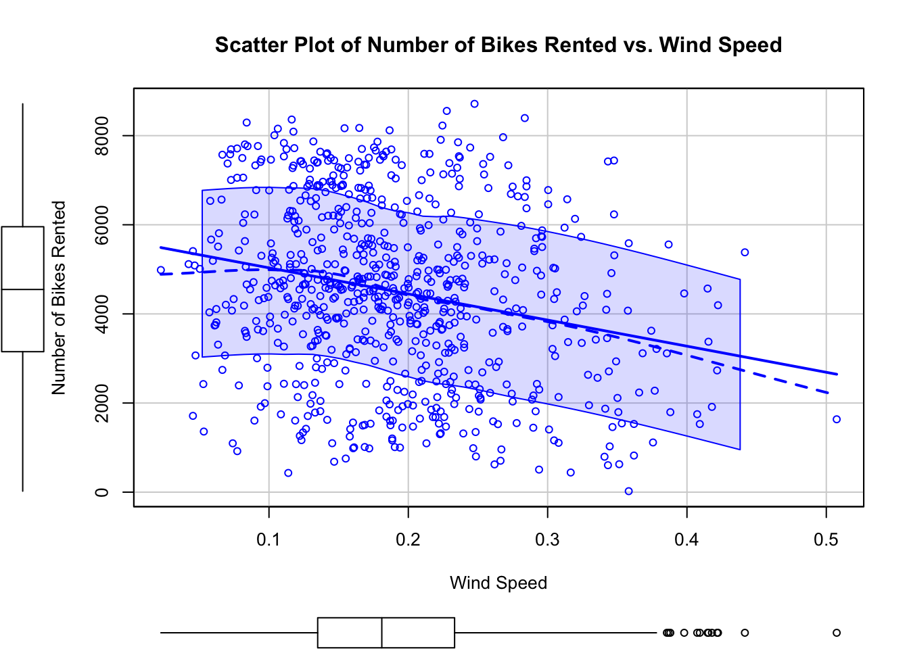
library(car)
cat("For Temperatue \n")For Temperatue ncvTest(model1)Non-constant Variance Score Test
Variance formula: ~ fitted.values
Chisquare = 6.915948, Df = 1, p = 0.008543cat("\nFor Feeling Temperature \n")
For Feeling Temperature ncvTest(model2)Non-constant Variance Score Test
Variance formula: ~ fitted.values
Chisquare = 9.519756, Df = 1, p = 0.0020327cat("\nFor Windspeed \n")
For Windspeed ncvTest(model3)Non-constant Variance Score Test
Variance formula: ~ fitted.values
Chisquare = 0.005352187, Df = 1, p = 0.94168cat("\nFor Humidity \n")
For Humidity ncvTest(model4)Non-constant Variance Score Test
Variance formula: ~ fitted.values
Chisquare = 4.921905, Df = 1, p = 0.026518We apply ncvTest in R. The test is known as Breusch-Pagan test, which is for testing heteroscedasticity.
*Heteroscedasticity refers to a situation in a regression model where the variance of residuals or errors is not constant across all levels of the independent variable(s). It violates one of the key assumptions of ordinary least squares (OLS) regression, which is that the variance of the errors is constant (homoscedasticity).
*P-value: A low p-value (commonly below 0.05) suggests that we reject the null hypothesis, indicating the presence of heteroscedasticity (non-constant variance). A high p-value, as in this case, suggests that there is not enough evidence to reject the null hypothesis, indicating that the residuals can be considered homoscedastic (constant variance).
*Null Hypothesis: there is no heteroscedasticity (the model is constant variance).
Since for the above four covaraites, I made the linear regression model for each x v.s. y=cnt, get the residual plots for each, and use the Breusch_Pagan test to test if there is a heteroscedasticity. Because the model of (x = windspeed, y = cnt) has the lowest Chi-Square, and the highest p-value, we are failed to reject the null hypothesis. Thus, we may choose Windspeed as our Covariate.